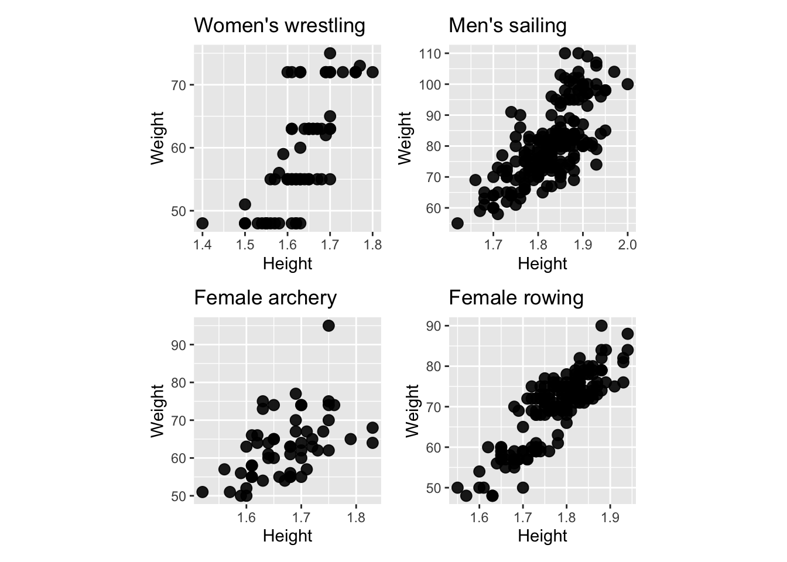

Chapter 7 Resources
- Friendly and Denis “Milestones in History of Thematic Cartography, Statistical Graphics and Data Visualisation” available at http://www.datavis.ca/milestones/
- Unwin (2015) Graphical Data Analysis with R
- Graphics using ggplot2
- Wilke (2019) Fundamentals of Data Visualization https://clauswilke.com/dataviz/
7.1 Exercises
- For each of the following scatterplots, of different Olympic athlete’s height and weight identify the visible features, and which is the most surprising.

Guess the correlation between the two variables in each of the previous scatterplots.
From the following scatterplot, of diamond size and price, what are the most prominent features?

- In the previous plot of diamonds, what transformation would be recommended based on the “circle of transformations?”
- In the following plot of arrival delay and departure delay of flights into and out of the New York City area, what are the most prominent features?

- Which of these would be a surprising feature learned from this plot? Why?
- There are negative departure and arrival delays
- If a flight has a delay in departure it likely will be delayed on arrival
- Some flights with negative departure delay have long arrival delays
- Some flights have long delays
- Some flights with negative arrival delays have positive departure delays
- A dominant feature in the plot of average rating by number of ratings of movies in the IMDB database is a barrier, or two barriers, both top and bottom of plot. What is a plausible explanation for this feature?

- As movies become more popular ratings invariably go down
- There are just very few frequently rated movies and this means it is unlikely to see high values.
- The lesser rated movies have a lot of variance in their ratings, producing a barrier for the more frequently rated movies.
- The lesser rated movies have a lot of variance in their ratings, producing a barrier for the more frequently rated movies.
- The average of many values tends to be unlikely to be at the highest and lowest possible values.